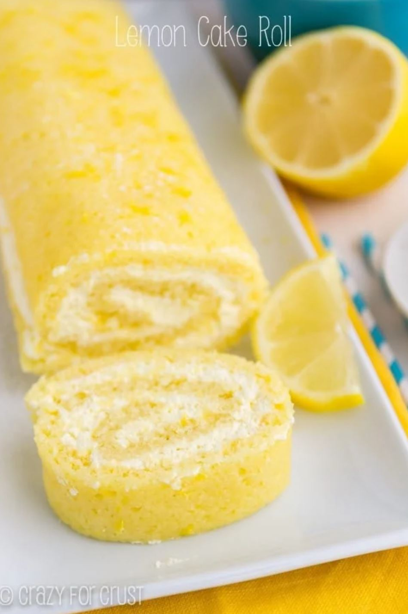
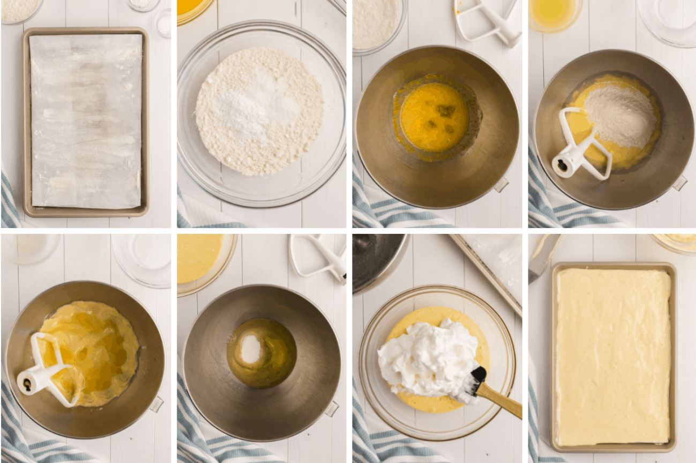
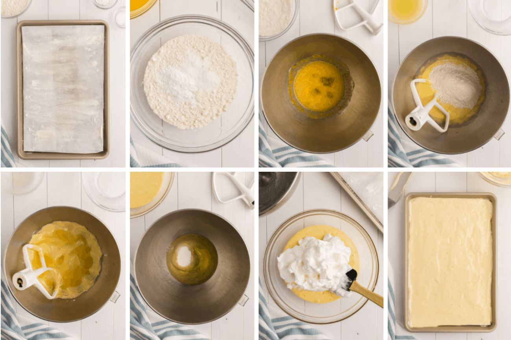
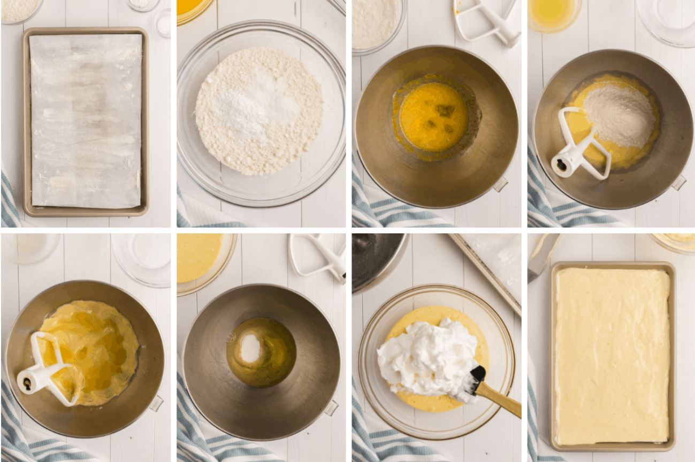

Sample Imagery
 

Lemon in every bite! Lemon cake and lemon whipped cream filling make this the perfect cake roll for any occasion.

Bon Appetit: I like how clean and simple the website is, and that it goes straight to the point. I don't like it when there are paragraphs of text before the recipe instructions. The one thing I don't like is that it doesn't have multiple photos.
AllRecipes: This website is very user friendly as it lets you add ingredients to a shopping list and check off steps that you have completed. I also like how ingredient amount will change depending on how many servings the user will make. It is very convenient.
Food Network: I like how this website uses columns more than the others as the ingredients and instructions are normally stacked on each other. I also like the big numbers, it creates a sense of hierarchy. The only thing is that the pages feel somewhat cramped.
ETQ: I like how they use and organize large photos. Although the photos are simple they grab your attention.
3SidedCube: Their colors are very bold and are used to draw attention. The choice for different font families creates a sense of hierarchy. I also like the little animations they have.
Khan Academy: I like the way things are organized. This website has clear hierarchy and structure for each subject.